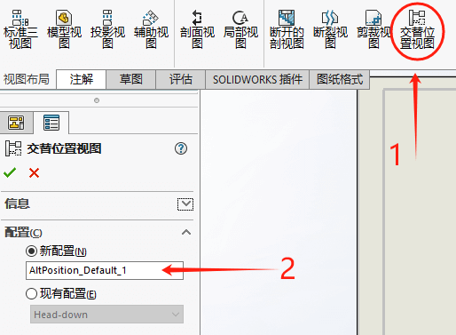
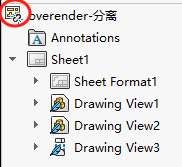

SOLIDWORKS工程图培训
1视图
SOLIDWORKS工程图文件可以包含一张或多张的图纸，图纸中又可以包含多个工程图视图
- 图纸：用于存放视图、尺寸、注解等内容的载体
- 图纸格式：用于定义边框、标题栏的模板
创建工程图
【文件-新建】创建一个新的工程图文件
多工程图图纸
图纸设置
（注意这里的文档属性是只针对当前的文件，或模板生效。会跟随在文件在其他电脑生效。这里要区别与“系统选项”）
【工具-选项-文档属性-绘图标准】设置当前文档的绘图标准
【工具-选项-文档属性-出详图】
【工具-选项-文档属性-尺寸-字体】
【工具-选项-文档属性-视图标号-字体】此设置对剖面和局部视图的标号文字有效
【工具-选项-系统选项-工程图】对在当前电脑打开所有工程图进行的设置
【工具-选项-系统选项-工程图-显示类型】
图纸属性
菜单栏【编辑-属性】，或者在视图【右键-属性】进入图纸属性的编辑窗口。
工程视图
视图内容包括“比例”、“视图方向”、“视图位置”。每一个视图都有一个单独的参考，但是每一张图纸可以有多个不同参考的视图。
视图类型包括：
- 模型视图
- 标准三视图
- 投影视图
- 相对视图
- 辅助视图
- 断裂视图
用草图绘制的工程视图：
- 剖面视图
- 旋转剖视
- 局部视图
- 断开的剖视图
- 裁剪视图
- 空白视图
- 标准三视图
父视图
工程视图的父视图。工程图视图的某些特性在视图间共享关联，形成所谓的父子级关系。（例如：从已有的视图中生成如投影视图、辅助视图、剖面视图、局部视图等，已有视图将成为新视图的父视图）父视图将对子视图有如下影响：
- 显示样式
- 比例
- 单击子视图将高亮父视图
工程视图的命名
添加工程视图
激活视图
部分视图需要在工程视图中绘制草图来生成，绘制草图需要注意在“激活视图”的情况下绘制。这样才能保住草图与视图相关。
- 视图锁焦
- 图纸锁焦
局部视图
利用草图区域对改位置进行局部放大的效果（如下3个位置）
投影视图
剖面视图
通过在父视图绘制剖面的草图线
小知识点：在放置投影视图前，按住Ctrl可以接触与父视图的对齐关系。
模型视图
可以【模型视图】创建基于一个预定义的视图方向（如俯视图、主视图、等轴测图）的单个视图，这个视图是基于零件或装配体的命名视图，选择完设置后，可在工程图空白处放置模型视图。
还可以通过【视图调色板】创建基于视图方向的视图
设置视图
中心符号
中心符号线
在工具栏【注解-中心符号线】添加，对象选择圆边即可识别。
中心线
在工具栏【注解-中心线】添加，对象选择圆柱面即可识别。
模型边线
用户可以对视图里显示的变现进行“隐藏”、“线型”、“颜色”、“线粗”进行操作。
2尺寸
工程图中尺寸用来描述模型的形状和大小。重要的一点是，在SW设计模式里，3D模型的设计尺寸与工程图图形是相关联的。着意味着我们可以很多程度上使用现有的3D尺寸。
尺寸类型
工程图中大致分成两种类型：
模型尺寸
模型尺寸是建立在零件特征时标注的尺寸，模型尺寸可以插入到不同工程图视图中；
参考尺寸
可以直接在工程图里标注尺寸，这里的尺寸只是参考模型从动的尺寸，不能通过图纸的尺寸来修改模型。
模型项目
利用【模型项目】功能可以插入模型尺寸到工程图视图里来。
1、为工程图标注尺寸（默认勾选）
2、实例/圈数计数
3、异形孔向导轮廓
4、异形孔向导位置
操作尺寸
拖动尺寸
隐藏尺寸
尺寸移动到其他视图
删除尺寸
对齐尺寸
（补充一点：该命令获得的尺寸是有建模时的尺寸位置相关，使用会出现尺寸位置重叠错乱的现象。
我们可以框选尺寸，在菜单栏【工具】——【对齐】——【自动对齐】）
尺寸属性
在尺寸属性里，你可以修改尺寸的“样式”、“公差/精度”、“主要值”、“字体”、“双制尺寸”等。
不过这里如果是【模型项目】生成的尺寸，尺寸的依据是模型参考的尺寸，即修改需在模型端修改。
标注样式：利用尺寸样式可以快速定义尺寸的精度、字体、尺寸类型等。
主要精度
选择将精度与模型链接以链接主要单位和公差精度。
双精度
选择将精度与模型链接以链接次要单位和公差精度。
3注解
注解是描述工程图内容的说明信息。
注解类型
- 注释
- 焊接
- 毛虫
- 端点处理
- 形位公差
- 表面粗糙度
- 多转指引线
- 孔标注
- 基准特征
- 基准目标
- 销钉
- 装饰螺纹线
- 零件序号
- 成组的零件序号
- 修订表
- 工程图块
- 。。。。。。
添加注释
注释是一种文字注解，可以带引线吸附在模型对象上。
注释内容可以关联零件的自定义属性方法。关联其他对象的方法类同，可举一反三（或是看看Help 手册）

基准特征符号
形位公差符号
块
块可以被用来建立标准注释、标签以及其他solidwork接受的用户自定义符号。
块可以是由草图绘制而成，保存成（.sldblk格式）
4装配体视图
同零件的工程图类似，但是装配体模型的工程图在视图上会多了【交替视图】的使用。
设置自动隐藏
使用【生成视图时自动隐藏零部件】隐藏零部件，被隐藏的零部件即使改变工程视图的视图方向也无法显示。自动隐藏在【选项-系统选项-工程图-生成视图时自动隐藏零部件】
配置选择
每个视图都可以选择装配体的配置
断开的剖视图
利用断开的剖视图可以检查装配体内部的内容
隐藏/显示零部件和实体
利用【隐藏/显示零部件】和【隐藏实体】可以在工程图视图里指定某些零部件的显示与隐藏
与此相同的效果的还有【隐藏/显示边线】和【隐藏/显示实体】
交替位置视图
在表示装配体不同工况下的位置时，可以使用【交替位置视图】来表示。交替位置视图，是通过装配体的派生配置来作为前后位置的表达的。
- 创建新配置
1、如果当前装配体只有一个配置，则你需要通过如下新配置，然后点确定到装配体里通过【移动零部件】的方式产生新配置
2、选择“新配置”确认后，软件会自动切换到装配体模式并直接进入到【移动零部件】的命令操作。你可以使用自由拖动等方式，获得一个“新的位置的配置”。确定
3、软件回到工程图模式，此时视图1上就会有【交替位置视图】的显示，这就可以表示装配体在不同工况下的位置变化。
- 使用现有配置
如果你是已经在装配体设置好了位置的配置（或派生配置）。那直接使用“现有配置”即可。相当于跳过了上面说的在装配体设置的新建配置这步骤。
爆炸视图
利用装配体中已有的爆炸视图可以在工程图中显示。
显示状态
用来定义装配体中每个零部件的不同设置组合，并保存在配置中。
5模板
模板主要需要包括如下几点：
- 属性
- 注释属性
- logo图标
- 材料明细表定位点
- 预定义视图
graph LR 图纸模板slddot-->文档属性 图纸模板slddot-->图纸大小 图纸模板slddot-->图纸格式slddrt-->可以用于后续文件图框替换
图纸格式
定制工程图模板和图纸格式，通常意义上所说的图框的内容，就是SW里的图纸格式。
在工程图模式下，你需要留意【编辑图纸格式】模式。这个模式可以在空白图纸上【右键-编辑图纸格式】进入。以下操作皆在该模式下进行。
模板属性
默认的SW图纸格式模板有对名称和材质等属性做了关联。关联后的属性会有如下的关联表示描述。
1 | <$PRPSHEET:"属性名"> |
- 当前文件
工程图文件的属性
- 此处发现的模型
模型的属性，并且该选项还可以选择指定的视图或模型进行读取。（不过一般SW工程图大都建议一图一零件）
插人OLE和图像
OLE是一种文件对象，OLE（Object Linking and Embedding，对象连接与嵌入），是“面向对象”的技术，利用这种技术可开发可重复使用的 软件组件 （COM）内容如下图：
图像对象，大都是我们企业自己的logo标识。建议是以【插入-对象】
表格定位点
定位点是用在给插入表格时指定位置的作用。记得在进入【编辑图纸格式】模式下进行操作。
使用表格时，勾选定位点选项即可。
打印页面设置
在【打印-页面设置】里，须“使用此文件的设定”来约束当前模板的打印页面设置。这样就能保证后续新建的文件的页面设置。
保存
完成上述操作后就可以对自定义模板和图纸格式进行保存。这里还是再强调一般这两种的区别：
- 图纸格式（格式.slddrt）：只是图框，可在后续图纸图框进行替换；
- 图纸模板（格式.slddot）：用在新建文件时生效
预定义视图
在图纸格式中添加几何关系
工程图模板设置
预定义视图的模板
使用工程图模板
标题块字段
选择编辑对象
填写标题块
更新图纸格式
当你在后续图纸模板更新时，你就需要在设计树选择图纸右键【属性-图纸格式/大小】来替换新图纸模板模板
6材料明细表和设计表
材料明细表
添加材料明细表
- 选择模板
- 吸附到定位点
表的明细内容还分：顶层、零件、缩进三种；具体后面我觉得可以参考官方文档说明：
材料明细表 PropertyManager - 2017 - SOLIDWORKS 帮助
修改材料明细表
移动列&添加列
设置表格格式：对表格内“字体”、“对齐”、“行高列宽”等进行设置。
分割材料明细表：通过水平或垂直分割成更小的表格，便于更好的放置在工程图纸内。
制作材料明细表
当装配体有多个配置时，可以利用【制作材料明细表】功能，但此功能只对数量列起作用。
派加顶目
在装配体中不以零件形式存在的项目可以通过手动方式添加到材料明细表中，即通过添加行手动编辑的方式添加。
（图）
制作材料明细表
零值数量，可以按3种方式显示数量为0的单元格：虚线、零值、空单元格。
隐藏行
排序：
零件序号
工程图中的表格
在工程图里插入设计表，并修改设计表尺寸。
7性能和显示
大型装配体模式
在【选项-系统性选-装配体-大型装配体】里设置。这是用于操作处理SW装配体的一种系统选项，可以有效的提高视图和工程图的创建性能。
大型装配体模式打开后，【动态高亮显示】会被禁用该选项会影响视图选择零部件对象时，
轻化工程图
工程图可以采用类似装配体的轻化格式打开工程图。理论上工程图所参考的零部件文件是不会被可写加载，对性能是有提升的。切换大型装配体模式
分离工程图
（注意：2023版本后【分离工程图】功能被【出详图】模式代替，这部分可以跳过学习）
利用【分离工程图】可以创建一份最后一次保存时的零部件参考的图纸，该图纸是分离于零部件的关联参考的。这就可以将分离的工程图传送给其他人而不需要传送模型文件。
分离工程图在设计树上有个“断开连接符号标记”表示
如果需要对参考模型进行处理，这时将提示用户装入模型文件。可以通过右键单击视图并从弹出的快捷菜单里选择【装入模型】
注意：在创建分离工程图时，模型参考会以当前的状态保存。建议是在零部件做Ctrl+Q【强制重建】操作。以保住当前的模型是最新版本。
- 强制重建：是重新对模型的所有特征进行重建；
- 重建：只是对模型中新的特征或修改的特征进行重建；
备份工程图
转换到分离的工程图
修改参考装配体
装人模型
显示品质设置
在【选项-文档属性-图像品质】调整以性能优先或显示优先
8工程图参考和对比
工程图重用
另存为工程图重用时，在弹窗的另存为对话框中，勾选下面“包括所有参考的零部件”选项。并打开【高级】设置。
在【高级】设置列表里，就是该工程图所带有的零部件参考，以及你可以对里面的内容进行选择【查找/替换】等操作。
对于工程图文件中零部件的参考，可以在【文件-查找相关文件】。或【右键视图-属性】里查看。
替换工程图参考
在程序打开文件对话框里，选择参考进行设置，这里可以看到文件目前所参考的位置。
编辑工程图参考：可以双击名称或查找文件的文件夹位置进行参考。
替换模型参考，往往会出现特征不同导致的尺寸悬空的问题，如下：将列举出当前替换之后，出现的悬空问题。你可以勾选删除，也可以跳过，后续再删除。
DrawCompare
使用【工具-比较-DrawCompare】工具来高亮显示两个所选工程图的不同之处。
第一个所选工程图的【添加部分】和【移除部分】选项使用彩色字体，以便观察比较。
Design Checker
可以根据指定的标准进行检查零件、装配体、工程图等文件的文档属性标准。检查激活的文档